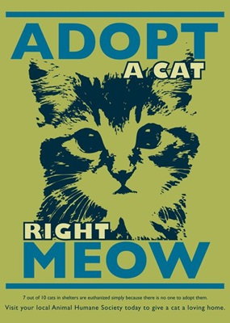
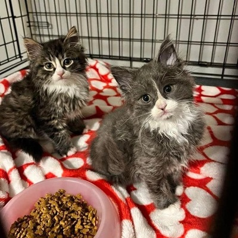
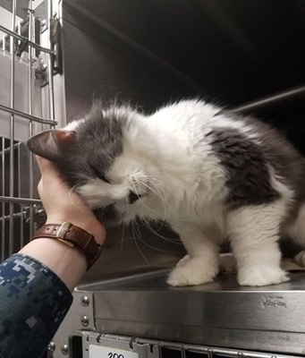

¿Por qué es mejor adoptar un gato en vez de comprarlo? 🐾
La adopción de gatos es una opción responsable y ética que ofrece muchos beneficios tanto para los animales como para las personas. Adoptar un gato en lugar de comprarlo en una tienda o criador tiene varias razones de peso que vale la pena considerar. A continuación, te explicamos por qué la adopción es la mejor opción:

1. Salvar vidas
Cuando adoptas un gato, estás dando una oportunidad a un animal que lo necesita. En los refugios y protectoras, miles de gatos esperan ser adoptados, muchos de ellos debido a abandonos o situaciones difíciles. Adoptar en lugar de comprar ayuda a reducir la sobrepoblación animal y evita que más gatos sean sacrificados debido a la falta de hogares.
2. Prevenir la sobrepoblación
El número de gatos sin hogar sigue aumentando, y adoptar ayuda a frenar este ciclo. Comprar un gato, especialmente de criadores comerciales, contribuye a la demanda de más camadas, lo que puede empeorar la sobrepoblación en refugios. Adoptar fomenta una comunidad más responsable al darle un hogar a un gato que ya está en busca de una oportunidad.
3. Variedad de opciones
En los refugios y centros de adopción, puedes encontrar una increíble variedad de gatos con diferentes personalidades, edades, colores y razas. No solo hay gatos comunes, sino también razas específicas, incluyendo gatos adultos y gatos con necesidades especiales. Adoptar te permite encontrar un gato que se ajuste a tu estilo de vida y preferencias sin tener que recurrir a la compra.
4. Beneficios emocionales
Adoptar un gato no solo cambia su vida, sino también la tuya. Al darle un hogar a un gato que ha vivido en un refugio, experimentas la satisfacción de salvar una vida y darle la oportunidad de disfrutar de un entorno amoroso. Esta experiencia puede ser profundamente gratificante y te conecta con la causa del bienestar animal.

5. Costos más bajos
Adoptar un gato generalmente es más económico que comprarlo a través de criadores, especialmente si consideramos los gastos que incluyen vacunas, esterilización y atención veterinaria inicial. Muchos refugios incluyen estos cuidados básicos en el costo de adopción, lo que significa que tu nuevo compañero estará al día con su salud sin que tengas que gastar una fortuna.
6. Fomentar la ética animal
Comprar gatos de criadores comerciales o tiendas de mascotas puede fomentar la explotación de animales, en especial cuando los criadores no siguen prácticas éticas. Algunos criadores priorizan la venta sobre el bienestar de los animales, mientras que las organizaciones de rescate se enfocan en proporcionar a los gatos una segunda oportunidad para vivir en un hogar adecuado.
7. Gatos ya socializados
Muchos gatos en refugios ya están acostumbrados a los seres humanos y otros animales, especialmente si se han criado en un entorno de rescate o han sido sociabilizados. Esto puede hacer que el proceso de integración a tu hogar sea más fácil. Además, los refugios y organizaciones de rescate suelen hacer esfuerzos para educar a los adoptantes y prepararlos para una transición exitosa.
8. Promover una cultura de adopción responsable
Adoptar en lugar de comprar ayuda a crear una cultura de adopción responsable y apoya el trabajo de los refugios y organizaciones sin fines de lucro que luchan por los derechos de los animales. Al adoptar, no solo estás beneficiando al gato, sino también contribuyendo a una sociedad más ética y compasiva.
Adoptar un gato no solo es una opción amorosa, sino también un acto responsable. Al elegir adoptar, estás contribuyendo a la mejora de la vida de los gatos y ayudando a combatir la sobrepoblación y el abandono. Considera la adopción como una forma de hacer una diferencia en la vida de un animal y en tu propia vida.
